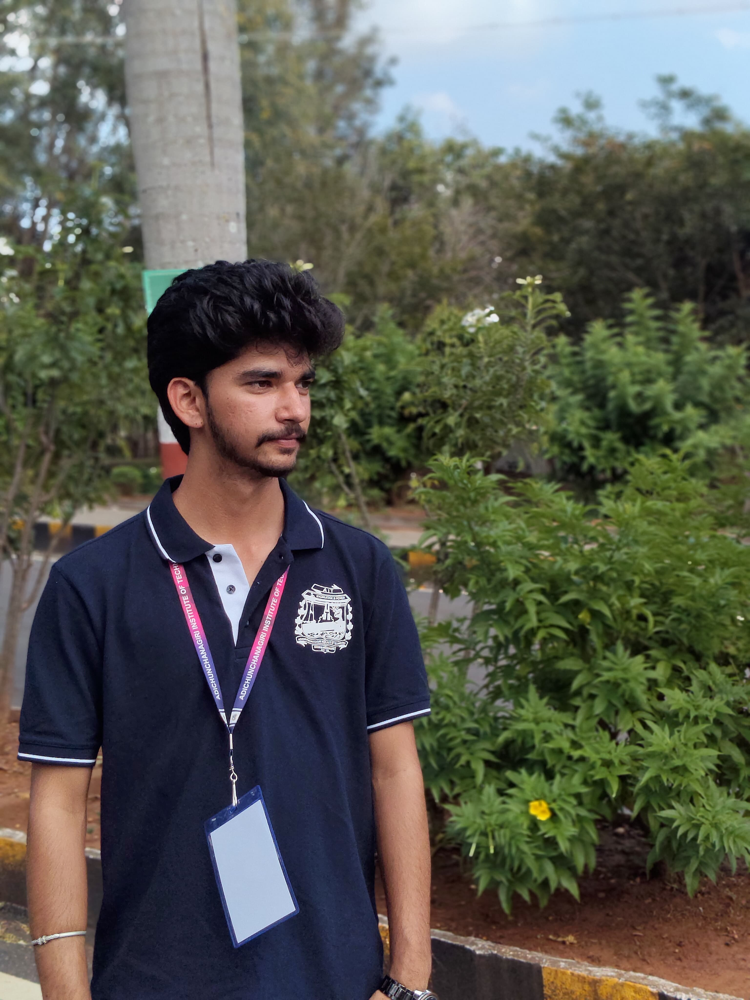

Dedicated and results-driven Artificial Intelligence & Machine Learning student with a strong foundation in Python, Machine Learning, Deep Learning, and Data Analysis. Skilled in applying AI techniques to real-world problems through hands-on projects in computer vision, natural language processing, and IoT. Known for being hardworking, eager to learn, and quick to adapt in dynamic environments. Looking forward to contribute technical expertise while continuously expanding professional knowledge.
| Qualification | Institution | Year |
|---|---|---|
| B.E. (CSE - AIML) | Adichunchanagiri Institute of Technology, VTU | 2026 |
| PUC | BGS Balehonnuru | 2022 |
| SSLC | BGS Balehonnuru | 2020 |
Problem-Solving | Team Collaboration | Communication | Time Management | Adaptability | Hardworking | Eager to Learn
Robotics & Automation | Smart Agriculture | Real-time Computer Vision Applications | Tech Blogging